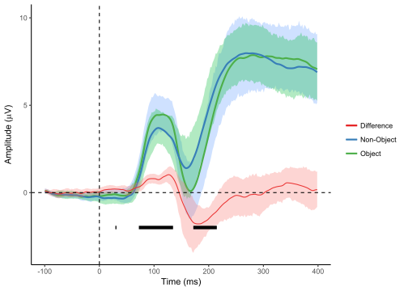

Running statistical tests using “purrr”
Something which puzzled me for a while was how to efficiently perform running (i.e. timepoint-by-timepoint) statistical tests on ERP/EEG in R. That was solved for me when I discovered the purrr package, another of ggplot2 author Hadley Wickham’s projects. Using the split command, you can easily split a data frame into multiple frames by one of its variables. In the EEG/ERP case, that means I can easily split the data into separate data frames for each timepoint and run my test of choice on each timepoint independently using the map command. Finally, map_dbl lets me extract the relevant pvalues from each test into a single vector.
I’ll demonstrate this using the data from my first post to run t-tests at each timepoint. First of all, let’s run the t-tests.
library(dplyr)
library(purrr)
runningT <- levCatGA %>%
split(.$Time) %>%
map(~t.test(amplitude ~ condition, paired = TRUE, data = .))I use %>% to pipe the results of each line of code down into the next line of code, so that I don’t have to use intermediate variables to store the results of each line.
I now have a list, runningT, containing the t-test result for each timepoint. Each of these tests can be accessed independently. Here is the result for 0 ms, for example:
runningT$`0`##
## Paired t-test
##
## data: amplitude by condition
## t = 0.35813, df = 14, p-value = 0.7256
## alternative hypothesis: true difference in means is not equal to 0
## 95 percent confidence interval:
## -0.2085599 0.2921698
## sample estimates:
## mean of the differences
## 0.04180494Let’s now extract the p-value for each test. For each t-test result, the p-value is stored in a list-element conveniently labeled “p.value”, so it’s very easy to extract. If you wanted the t-statistic, you could use “statistic” instead. The exact terms you need to use will vary according to which test you run. Most likely you’ll use a similar method to perform running F-tests. I’ve found these a bit harder to get the right values from, but more on them later.
First up, I’ll create a data frame with columns for time and for p-values, then plot them on their own.
pvals <- data.frame(Time = unique(levCatGA$Time),
p.value = map_dbl(runningT,"p.value"))
ggplot(pvals, aes(x = Time, y = p.value)) +
geom_point()Typically, people add a separate line to ERP plots indicating timepoints which were significant at the pre-specified alpha (so p < .05, usually). Here’s how to do that:
pvals$crit <- 0 + (pvals$p.value <= .05)
pvals$crit[pvals$crit == 0] <- NA
levCat.plot +
stat_summary(fun.data = mean_cl_boot, geom = "ribbon",
size = 1, aes(fill = condition), alpha = 0.3) +
guides(fill = "none") +
stat_summary(fun.y = mean, geom = "line", size = 1,
aes(colour = condition)) +
labs(x = "Time (ms)",
y = expression(paste("Amplitude (", mu,"V)")), colour = "")+
geom_line(data = pvals, aes(x = Time, y = crit-3),
na.rm = TRUE, size = 2)+
geom_vline(xintercept = 0, linetype = "dashed") +
geom_hline(yintercept = 0, linetype = "dashed")First I thresholded the p values at p = .05, replacing non-significant values with NAs and significant values with 1s. I then added a geom_line to the plot. Since ggplot is plotting the line using the same axis as for the ERPs, I simply offset them by 3 so that the significance line is plotted well below the actual ERPS.
Let’s add the significance line to a plot that includes the difference wave:
levCat.plot +
guides(fill = "none") +
labs(x = "Time (ms)",
y = expression(paste("Amplitude (",mu,"V)")), colour = "") +
stat_summary(fun.data = mean_cl_boot, geom = "ribbon",
alpha = 0.3, aes(fill = condition)) +
stat_summary(fun.y = mean, geom = "line", size = 1,
aes(colour = condition)) +
stat_summary(data = levCatDiff, fun.y=mean, geom = "line",
aes(colour = condition)) +
stat_summary(data = levCatDiff, fun.data = mean_cl_boot,
geom = "ribbon", alpha = 0.3, aes(fill = condition)) +
geom_line(data = pvals, aes(x = Time, y = crit-3),
na.rm = TRUE, size = 2) +
geom_vline(xintercept = 0, linetype = "dashed") +
geom_hline(yintercept = 0, linetype = "dashed")
Notice how the significance line more or less corresponds to the time-points where the CIs around the difference wave no longer overlap zero. It’s clear that there are significant differences from around 80-130 ms and from 170-210 ms.
Of course, these p-values are not corrected for multiple comparisons, which is a bit of an issue when there are 256 t-tests. Fortunately, it’s easy to correct them in a variety of ways using the the p.adjust command.
pvals$critBon <- 0+ (p.adjust(pvals$p.value,"bonferroni") <= .05)
pvals$critBon[pvals$critBon == 0] <- NA
pvals$critHolm <- 0 + (p.adjust(pvals$p.value, "holm") <= .05)
pvals$critHolm[pvals$critHolm == 0] <- NA
pvals$critFDR <- 0+(p.adjust(pvals$p.value, "fdr") <= .05)
pvals$critFDR[pvals$critFDR == 0] <- NA
levCat.plot +
guides(fill = "none") +
labs(x = "Time (ms)",
y = expression(paste("Amplitude (",mu,"V)")), colour = "") +
stat_summary(data = levCatDiff, fun.y=mean, geom = "line",
aes(colour = condition)) +
stat_summary(data = levCatDiff, fun.data = mean_cl_boot,
geom = "ribbon", alpha = 0.3, aes(fill = condition)) +
geom_line(data = pvals, aes(x = Time, y = crit-3), na.rm = TRUE,
size = 2)+
annotate("text", x =300, y = -2, label = "Uncorrected") +
geom_line(data = pvals, aes(x = Time, y = critBon - 3.3),
na.rm = TRUE, size = 2, colour = "darkgreen") +
annotate("text", x =300, y = -2.3, label = "Bonferroni",
colour = "darkgreen") +
geom_line(data = pvals, aes(x = Time, y = critHolm-3.6),
na.rm = TRUE, size = 2, colour = "blue") +
annotate("text", x =300, y = -2.6, label = "Bonferroni-Holm",
colour = "blue")+
geom_line(data = pvals, aes(x = Time, y = critFDR-3.9),
na.rm = TRUE, size = 2, colour = "darkred") +
annotate("text", x =300, y = -2.9, label = "FDR",
colour = "darkred")+
geom_vline(xintercept = 0, linetype = "dashed" )+
geom_hline(yintercept = 0, linetype = "dashed")With either Bonferroni or Bonferroni-Holm correction, only the effect in the P1 stays significant, while the later effect is no longer significant. FDR correction keeps some of both effects significant. As you can see, the 95% CIs reflect the uncorrected p values. They could, in theory, also be corrected to reflect multiple comparisons, but I’ve never seen this done. Just make sure to be clear that they are uncorrected if using them for inference.
So to sum up, it’s pretty easy with purrr to do running, timepoint-by-timepoint statistical tests. The trickiest part can be finding out how to extract the relevant values from the output of those tests. Here I’ve used the built-in R command t.test to run the statistics. You can easily extend this approach to ANOVAs, which are another very common statistical test you’d see people performing when there are more than two conditions. I’ll be doing some F-tests in a later post.